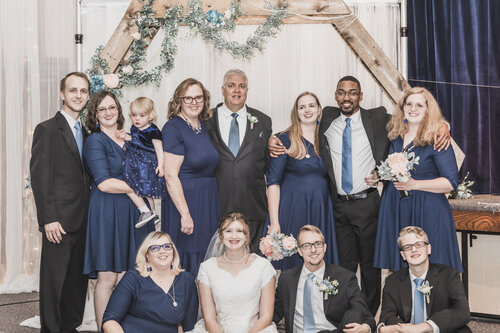
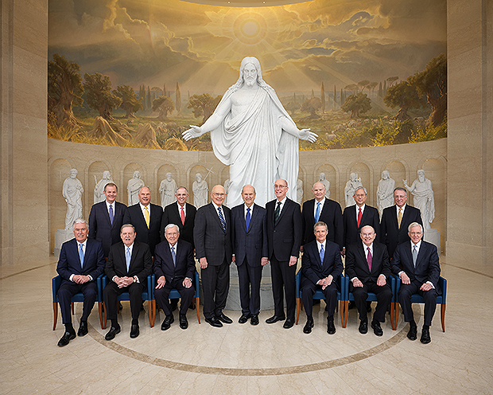
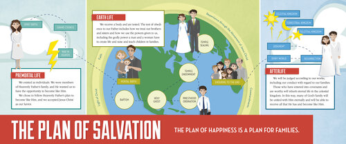

Week 1
Why are families important? Heavenly Father gave us families to have a place where we are loved and where we can be taught the gospel. It is a key unit in His plan for us. I want to be with my family forever.
Week 2
What is the roll of prophets in proclaiming the doctrine of eternal families? Heavenly Father gives us latter-day prophets to help us know what He wants us to do. One good example of this is when “The Family: A Proclamation to the World.” came out. It has shown to be very helpful in a world where values shift with popular demand. It has helped me know what doctrine I should be following when it comes to my role as a wife, mother and daughter of God.
Week 3
Why is the family central to Heavenly Father's plan, and why do we need a physical body? “the family is central to the Creator’s plan for the eternal destiny of His children” (“The Family: A Proclamation to the World,” ChurchofJesusChrist.org). We came to earth to gain a physical body so that we can experience all that God has in store for us. Our bodies are a gift. One of the things we are here to do is to learn to control our bodies by abiding by the commandments Heavenly Father has given to us.
Week 4

Why is marriage important in Heavenly Father's plan? The scriptures say that "neither is the man without the woman". We were designed to work together with each having equal but different rolls to play. These rolls work together to help a family be successful through good and hard times. If each is willing to give what they are able to the marriage, it will be a happy one, and become an eternal one.
Week 5

What are eternal families and how can we be an eternal family? Eternal families are families that have been sealed together with priesthood power in a temple. That sealing is just the start to becoming an eternal family. It is based on our willingness to keep the covenants we have made. If an eternal family is achieved, the family will live together forever and have more joy than we can currently comprehend.
Week 6
What is the marriage covenant? The marriage covenant is the new and everlasting covenant. It is the final covenant we make in the temple. It seals a husband and wife together for eternity. If this covenant is kept in this life, there is joy. It does not mean that hard things will not happen, it means that there are two committed covenant keeping people that will work through those hard things together.